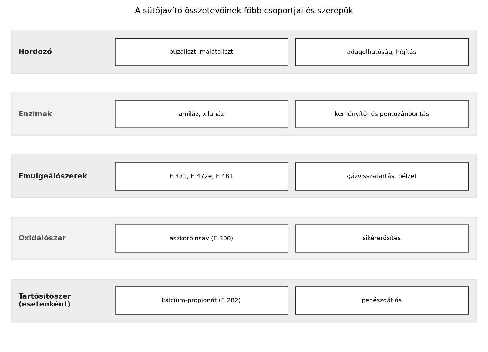

A pékségben gyakori, hogy a kenyér térfogata kicsi, a bélzete tömör, a héja halvány, és a termék gyorsan öregszik. Ilyenkor a pék a következő műszakban nem önmagában a lisztet cseréli le, hanem kis mennyiségű sütőjavítót adagol a tésztához. Ugyanakkor a vevő a csomagoláson E-számokat lát, az üzemben pedig egy allergénpanasz érkezik, mert a sütőjavítóban szójalecitin volt. Ezért a péknek pontosan kell tudnia, mi van a sütőjavítóban, hogyan hat, hogyan kell jelölni, és mikor beszélünk adalékanyagról vagy technikai segédanyagról.
Képzelj el egy 50 kg-os dagasztást. A lisztre vetítve 0,3% sütőjavítót mérsz be, ami 150 g por. Ez a 150 g több összetevő keveréke: enzim, emulgeálószer, aszkorbinsav és hordozó (például búzaliszt). A bekeverés után a tésztában ezek az anyagok a dagasztás, a kelesztés és a sütés során fejtik ki hatásukat: az enzimek a keményítőt bontják, az emulgeálószer a zsiradék–víz–fehérje kapcsolatot stabilizálja, az aszkorbinsav pedig a sikérváz oxidációjával javítja a gázvisszatartást. A termék címkéjén azonban nem elegendő annyit írni, hogy „sütőjavító”, hanem a keverékben lévő, a késztermékben technológiai hatást kifejtő adalékanyagokat a funkciójukkal és E-számukkal vagy nevükkel fel kell tüntetni; az átvitt, hatás nélküli adalékanyagra és a technikai segédanyagra eltérő szabály vonatkozik, az allergént viszont mindig jelölni kell (ellenőrizendő: 1169/2011/EU 18–21. cikk).

Definíció. Adalékanyag az olyan anyag, amelyet technológiai céllal adnak az élelmiszerhez, és a késztermékben vagy annak összetevőjében megmarad, vagy amelynek származékai a késztermékben jelen lehetnek. Ilyen például a kenyérben a kalcium-propionát (penészesedésgátló) vagy a lecitin (emulgeálószer).
Definíció. Technikai segédanyag (más néven feldolgozási segédanyag) az az anyag, amelyet a feldolgozás során technológiai okból használnak, de a késztermékben szándékosan nem marad meg, vagy csak technológiailag elkerülhetetlen maradék formájában, és a készterméken nincs technológiai hatása. A pékségekben tipikus példa a leválasztó olaj vagy a formaelválasztó emulzió, amelyet a sütőlemezre, formára visznek fel, hogy a tészta ne ragadjon le.
Definíció. Sütőjavító (sütőipari készítmény, sütőadalék-keverék) olyan, többnyire por alakú keverék, amely kis adagban, a lisztre vetítve általában 0,1–1,0% mennyiségben javítja a tészta feldolgozhatóságát, gázvisszatartását, a térfogatot, a bélzet szerkezetét és a késztermék frissességét. A sütőjavító tartalmazhat adalékanyagot, enzimet, technikai segédanyagot és hordozóanyagot is.
Definíció. Kovászpótló olyan készítmény, amely a kovásszal érlelt termékekre jellemző enyhén savanykás ízt és aromát adja, vagy a kovász néhány technológiai hatását (például a bélszerkezet lazítását) részben pótolja anélkül, hogy hagyományos kovászt vezetne az üzem. Két fő típusa a savanyító keverék és a szárított kovász.
Definíció. Feltárt keményítőjű anyag (előzselésített vagy hidegen duzzadó keményítő) olyan keményítőalapú készítmény, amelyet hő- és nedvességkezeléssel úgy alakítottak ki, hogy hideg vízben is gyorsan duzzad és köt vizet. Sütőipari célra gyakran a tészta vízfelvevő képességét növeli, a bélzet puhaságát és frissen tartását javítja.
Definíció. Enzimkészítmény olyan fehérjetermészetű biokatalizátorokat (enzimeket) tartalmazó készítmény, amelyek a tésztában meghatározott átalakulásokat gyorsítanak, például a keményítőt bontják, vagy a sikérváz kialakulását segítik. Az enzimkészítményeket a sütőiparban általában keverékben, hordozóanyaggal együtt adagolják.
A kovászpótlókat akkor használjuk, ha a termék jellege vagy az üzemi technológia miatt nem vezetünk élő kovászt, de a késztermék mégis kovászos jellegű legyen.
Savanyító keverékek. Elsősorban szerves savakat (citromsavat, tejsavat, borkősavat stb.) és puffersókat tartalmaznak. A tésztában a sav csökkenti a pH-t, ami:
A savanyító keveréket pontosan kell adagolni: a túladagolás savanyú, „kovászosan nem tiszta” ízt okoz, a tészta pH-ja túl alacsony lesz, ami rontja az élesztő aktivitását.
Szárított kovász. A szárított kovász hagyományos kovászból, majd szárítással készült por. A gyártó az élő kovászt gyakran fagyasztva szárítja vagy porlasztva szárítja; a porban lévő tejsavbaktériumok és aromakomponensek a tésztában kovászos jelleget adnak. A szárított kovász nem feltétlenül tartalmaz élő, technológiailag hatékony mikroflórát, ezért sokszor savanyítóval kombinálják. A szárított kovászpor adagolása a lisztre vetítve jellemzően 2–10% (ellenőrizendő: a gyártói adatlap), míg az élő kovászt a liszt 20–30%-ában számoljuk. A szárított kovászos termékeknél a jelölésben fel kell tüntetni a tényleges összetevőket, például „szárított rozskovász, búzakovász” szerepelhet.
A pékáruk egy része viszonylag magas vízaktivitású, ezért penészesedésre és nyúlósodásra hajlamos. A tartósítószereket nem a higiéniai hibák elfedésére használjuk, hanem a megfelelő technológiai és higiéniai feltételek mellett a mikrobiológiai romlás késleltetésére.
Gyakori sütőipari tartósítószerek:
| Szokásos megnevezés | E-szám (ellenőrizendő) | Fő hatás |
|---|---|---|
| Kalcium-propionát | E 282 | penészgombák és egyes baktériumok ellen; kenyereknél gyakori |
| Szorbinsav | E 200 | penészgombák és élesztők ellen; élesztős tésztába keverve az erjedést is gátolja, ezért inkább felületi kezelésre, töltelékbe és vegyi lazítású termékhez való |
| Kálium-szorbát | E 202 | a szorbinsav sója, oldatban jól adagolható |
Szabály. A tartósítószert legfeljebb a termékre engedélyezett maximális mennyiségben adagoljuk (ellenőrizendő: 1333/2008/EK rendelet szerinti határértékek, a Magyar Élelmiszerkönyv előírásai és a gyártói adatlap). A megengedett legnagyobb mennyiséget a rendelet a késztermékre adja meg (a propionátnál propionsavban kifejezve); a lisztre vetített bemérést ebből kell átszámolni (ellenőrizendő: 1333/2008/EK II. melléklet). A túladagolás egészségügyi kockázatot és ízhibát okoz; a túl kevés pedig nem fejti ki a kívánt hatást. A tartósítószert pontosan kimérve, egyenletesen eloszlatva keverjük a liszthez vagy oldatban a dagasztóvízhez.
HACCP. A tartósítószer-adagolás szempontjából az ellenőrző pont a pontatlan bemérés (CCP csak akkor, ha a HACCP-terv így rögzíti): ha a kijelölt adagoló vagy mérleg hibás, a késztermékben a tartósítószer a megengedettnél több lehet, ami jelölési és élelmiszerbiztonsági eltérés. A határértéket a gyártmánylap és a HACCP-terv rögzíti; a bemérést dokumentálni kell (ellenőrizendő: az üzem HACCP-terve).
A sütőjavítók leggyakrabban több összetevőt kombinálnak, hogy egyszerre javítsák a tészta stabilitását, a gázvisszatartást és a késztermék frissességét.
Emulgeálószerek. Az emulgeálószerek a tészta zsiradék–víz határfelületén működnek, és a sikérfehérjékkel komplexet képezve stabilizálják a gázhólyagok falát. Gyakori sütőipari emulgeálószerek:
Aszkorbinsav (E 300). Az aszkorbinsav a sütőiparban oxidálószerként viselkedik, mert a tésztában lévő enzimek hatására dehidro-aszkorbinsavvá alakul, amely a sikérben lévő tiolcsoportokkal diszulfidhidakat alakít ki, így erősíti a sikérvázat. Hatása: nagyobb térfogat, jobb stabilitás, a tészta kevésbé esik össze. Az adagolás nagyon kicsi, gyakran 20–80 ppm (azaz 20–80 mg/kg liszt, ellenőrizendő: a gyártói ajánlás), túladagolásnál a tészta túlságosan merevvé, „száraz érzetűvé” válik.
Enzimek. A sütőjavítókban leggyakrabban alkalmazott enzimek:
Allergén. Az enzimkészítmények és emulgeálószerek allergénforrásai lehetnek. Például a szójalecitin szójaallergénként jelölendő; egyes enzimek búzából vagy tejből származó hordozóanyagot tartalmazhatnak. A sütőjavító csomagolásán a gyártónak fel kell tüntetnie az allergén összetevőket; a péknek ezt a késztermék címkéjén is meg kell jeleníteni. A „gluténmentes” terméknél különösen fontos ellenőrizni, hogy a sütőjavító nem tartalmaz-e búzasikért, búzakeményítőt vagy búzalisztet.
Feltárt keményítőjű anyagok. A hagyományos búzakeményítő hideg vízben nem duzzad, ezért ha a tészta vízfelvevő képességét akarjuk növelni, előzselésített (feltárt) keményítőt használunk. A feltárás során a keményítőszemcsék duzzadnak, részben elcsirizesednek, majd szárítják és porítják őket. A feltárt keményítő hideg vízben gyorsan vizet köt, ezért:
A feltárt keményítőjű anyagok adagolása jellemzően a lisztre vetítve 0,5–3%, de a pontos arány a keményítő típusától és a terméktől függ (ellenőrizendő: gyártói adatlap). Ha a feltárt keményítő módosított keményítőnek minősül, akkor E-számmal kell jelölni (E 1404–E 1451 tartomány, ellenőrizendő: 1333/2008/EK rendelet).
Enzimkészítmények. Az enzimeket a sütőiparban por vagy folyadék formájában, gyakran hordozóanyagra (búzaliszt, malátaliszt, szőlőcukor) felvive használjuk. Az enzimek hőérzékenyek: egy részük a sütés alatt inaktiválódik, ezért a késztermékben nincs technológiai hatásuk, így technikai segédanyagként kezelhetők (jelölésük elmaradhat, ha nincs a végtermékben hatásuk). Ugyanakkor ha az enzimkészítmény allergén forrásból származik (például búzaliszt-hordozó), az allergén jelölést akkor is fel kell tüntetni. A gyártói specifikáció és a HACCP-terv alapján kell eldönteni, hogy az adott enzim adalékanyagként vagy technikai segédanyagként kezelendő.
A leválasztó olaj a sütőipari technikai segédanyagok tipikus példája. A tepsikre, sütőlemezre, formákra, gyártósorokra viszik fel, hogy a tészta ne ragadjon le, és a késztermék könnyen elváljon a felülettől. A leválasztó olaj lehet egyszerű növényi olaj, vagy emulgeálószert és viaszt is tartalmazó készítmény.
Szabály. A leválasztó olajat csak élelmiszeripari célra engedélyezett, nyomonkövethető készítményként szabad használni. A felhordás során kerülni kell a túlzott mennyiséget, mert az a termék felületén zsíros réteget hagyhat, ami a csomagolóanyagba ivódik, és rontja az érzékszervi minőséget. A leválasztó olaj tárolását és felhasználását a HACCP-tervben kell szerepeltetni, különösen az idegen anyag (például szennyeződött permetezőfej) kockázata miatt.
Figyelem. A leválasztó olaj permetezése során a köd belélegzése és a csúszós padló kockázatot jelent. A munkaterületen használjunk megfelelő szellőzést, és a padlóra jutott olajat azonnal töröljük fel, hogy elkerüljük az elcsúszásos baleseteket. A permetező berendezés tisztítását csak a gyártói utasítás szerint végezzük.
Előírás. Az Európai Unióban az élelmiszer-adalékanyagok engedélyezését és felhasználását az 1333/2008/EK rendelet szabályozza (ellenőrizendő: a hatályos módosítások). Az adalékanyagot a fogyasztói tájékoztatásban a funkciójának megfelelő csoportnévvel (például „tartósítószer”, „emulgeálószer”, „savanyúságot szabályozó szer”) és az E-számmal vagy a konkrét névvel kell feltüntetni. Az 1169/2011/EU rendelet szerint a csomagolt élelmiszer összetevői között az összetevőket – az adalékanyagokat is – a felhasználáskori tömegük csökkenő sorrendjében kell felsorolni (ellenőrizendő: 1169/2011/EU 18–20. cikk, VII. melléklet). Az átvitt, a késztermékben technológiai hatás nélküli adalékanyagra külön szabály vonatkozik (ellenőrizendő).
Allergén. Ha az adalékanyag allergén forrásból származik vagy allergén összetevőt tartalmaz, akkor a csomagoláson az allergént ki kell emelni (például félkövérrel vagy aláhúzással). A sütőjavítókban előforduló allergénforrások:
Szabály. A péknek a sütőjavító átvételekor ellenőriznie kell a gyártói specifikációt és a címkét, hogy az allergén összetevők egyeznek az üzemi allergénmátrixszal. A „gluténmentes” termékhez használt sütőjavítónál a gluténtartalomra vonatkozó nyilatkozat vagy mérési bizonylat szükséges; a sütőjavítóban lévő búzaliszt vagy búzakeményítő miatt a késztermék nem lehet gluténmentes, hacsak a gyártó nem garantálja a határérték alatti gluténtartalmat (ellenőrizendő: ≤20 mg/kg a 828/2014/EU rendelet szerint).
Technikai segédanyag jelölése. A technikai segédanyagot főszabály szerint nem kell feltüntetni az összetevők között, ha a késztermékben nincs technológiai hatása. Ha azonban a technikai segédanyag allergén forrásból származó maradékot hagy, például szójalecitint vagy nem finomított szójaolajat tartalmazó leválasztó használata esetén, a gyártónak értékelnie kell, hogy a maradék allergén kockázatot jelent-e (a teljesen finomított szójaolaj és -zsír az 1169/2011/EU II. melléklete szerint nem minősül szója allergénnek; ellenőrizendő: II. melléklet 6. pont, gyártói specifikáció), és szükség esetén a készterméken fel kell tüntetni az allergént (ellenőrizendő: 1169/2011/EU rendelet, hatósági útmutatók). A péknek a technikai segédanyagok használatát is nyilván kell tartania a nyomonkövethetőség érdekében.
1. példa – Sütőjavító adagolás kiszámítása.
Egy 50 kg lisztet tartalmazó dagasztáshoz a sütőjavítót a lisztre
vetítve 0,4%-ban kell adagolni. Mennyi sütőjavítót kell bemérni?
Megoldás.
Adott:
,
.
Keresett:
.
Képlet:
Behelyettesítve:
Ellenőrzés: 0,4% a 100 kg liszthez 0,4 kg; 50 kg-hoz éppen a fele, 0,2
kg. ∎
2. példa – Tartósítószer adagolás ppm-ben.
Egy kenyérgyártásban kalcium-propionátot használunk 3000 ppm (azaz 3000
mg/kg liszt) mennyiségben. Mennyi kalcium-propionátot kell bemérni 80 kg
liszthez?
Megoldás.
Adott:
,
.
Keresett:
grammban.
Számítás:
Ellenőrzés: 3000 ppm = 3 g/kg, így 80 kg-hoz 240 g. ∎
Megjegyzés: a határértéket a rendelet a késztermékre adja meg; 1,35 kg
kenyér/1 kg liszt hozammal (tanulási példa) a 3000 mg/kg liszt kb.
3000/1,35 ≈ 2200 mg/kg kenyér kalcium-propionát. A határértéket
propionsavban kifejezve adják meg, ezért átszámítunk: a
kalcium-propionát moláris tömege kb. 186 g/mol, benne két propionsav kb.
148 g/mol, a tényező ≈ 0,80, így ≈ 1750 mg/kg propionsav; ezt kell a
termékkategóriára vonatkozó határértékkel összevetni (ellenőrizendő:
1333/2008/EK II. melléklet, E 280–283).
3. példa – Aszkorbinsav adagolás.
Egy sütőjavító aszkorbinsav-tartalma 5%. A gyártó 30 ppm aszkorbinsavat
ajánl a lisztre. Hány gramm sütőjavítót kell 100 kg liszthez, ha a
sütőjavító 5% aszkorbinsavat tartalmaz?
Megoldás.
Adott:
,
,
.
Keresett:
.
Először az aszkorbinsav tömege:
A sütőjavítóban az aszkorbinsav 5%, azaz:
Ellenőrzés: 60 g sütőjavítóban 5% = 3 g aszkorbinsav, ami 100 kg
liszthez 30 mg/kg. ∎
Egy kézműves pékségben a pék a fehér kenyeret sütőjavítóval készítette, de a címkén csak „sütőjavító (búzaliszt, emulgeálószer: E471, enzim)” szerepelt, azonban a sütőjavító valójában szójalecitint is tartalmazott. Egy szójaallergiás vásárló panasza nyomán kiderült, hogy a termék jelölése hiányos volt, mert a szójaallergént nem tüntették fel. A hiba oka az volt, hogy a pék nem olvasta el a sütőjavító gyártói specifikációjának allergénsorát. A helyes gyakorlat: minden új sütőjavító, adalékanyag vagy készítmény átvételekor az allergénmátrixot frissíteni kell, és a termékcímkét az összetevőlista alapján kell módosítani. A pékség az eset után bevezette, hogy a sütőjavító beszállítói adatlapját a minőségügyi felelősnek jóvá kell hagynia a gyártás megkezdése előtt.
A sütőjavítók és adalékanyagok minőségellenőrzése elsősorban dokumentációs és érzékszervi jellegű:
A sütőjavítót „lisztnek” nézik, és a lisztarányba beleértik. A sütőjavító nem liszt, a receptúrában a lisztre vetített százalékot a tészta lisztmennyiségére számoljuk, a sütőjavító külön tétel. Hiba esetén a TA és a tészta állaga eltér a tervezettől.
A tartósítószert szemre, kanállal adagolják. A mérleg nélküli bemérés túladagoláshoz vagy hatástalan mennyiséghez vezet. A tartósítószer hatásos és megengedett mennyiségét csak pontos méréssel lehet betartani; a bemérést dokumentálni kell a bemérési lapon vagy a gyártási naplóban.
Az allergénforrást nem ellenőrzik a sütőjavítóban. A szójalecitin, a búzahordozós enzim vagy a tejpor-alapú vivőanyag allergén kockázatot jelent. A pék a gyártói adatlap allergénsorát köteles átvezetni a termék allergénmátrixába és a címkére; a „gluténmentes” terméknél a búzalisztes sütőjavító tilos, ha nem garantált a gluténmentesség.
A leválasztó olajat nem technikai segédanyagként kezelik. Ha a leválasztó szer allergén anyagot tartalmaz (például szójalecitint vagy nem finomított szójaolajat; a teljesen finomított szójaolaj kivétel, ellenőrizendő: gyártói specifikáció), és a maradék a terméken maradhat, a jelölést a gyártónak vagy a péknek felül kell vizsgálnia. A technikai segédanyagok használatát ugyanúgy nyilván kell tartani, mint az adalékanyagokét.
1. feladat (A)
Magyarázd el röviden, mi a különbség az adalékanyag és a technikai
segédanyag között, és hozz mindkettőre egy pékségi példát!
2. feladat (A)
Egy sütőjavító összetevői: búzaliszt, E471, E300, alfa-amiláz,
szójalecitin. Mely összetevők minősülnek adalékanyagnak, melyik lehet
enzim, és melyik allergénforrás?
3. feladat (B)
Egy kenyér receptúrájában 100 kg liszthez 0,25% sütőjavítót és 0,15%
kalcium-propionátot adunk. Mennyi a bemérendő sütőjavító és
tartósítószer tömege? A tészta teljes tömege 160 kg. Ellenőrizd a
százalékok alapját!
4. feladat (B)
Egy fagyasztott tészta gyártásához feltárt keményítőt használunk a
lisztre vetítve 2,5%-ban. Mennyi feltárt keményítőt kell 40 kg liszthez?
Ha a feltárt keményítő 10% vizet tartalmaz, mennyi a tényleges
szárazanyag-bevitel?
5. feladat (C)
Egy pékség új sütőjavítót vezet be a rozskenyérhez. A gyártói
specifikáció szerint a sütőjavító szárított rozskovászt, citromsavat,
búzasikért, és nyomokban tojást tartalmaz. A rozskenyér címkéjén a
pékség „gluténmentes” feliratot akar használni. Milyen hibákat találsz
ebben a tervben? Hogyan kellene eljárni?
6. feladat (D)
A műszakban a pék a sütőjavítót a dagasztóvízbe szórja, de előtte nem
oldja fel, és a bemérést nem dokumentálja. A kész kenyér bélzetében
fehér, sütőjavító-szerű csomók látszanak. Mi lehet az ok? Melyik
ellenőrző pontot kell ellenőrizni, és mi a helyes művelet?
Önellenőrzés – válaszok
Feladatok megoldásai
1. feladat (A)
Az adalékanyag a késztermékben marad vagy származéka jelen lehet, és
technológiai hatása van; például a kalcium-propionát a kenyérben. A
technikai segédanyag a feldolgozás során használt, de a késztermékben
szándékosan nem marad, vagy csak technológiailag elkerülhetetlen maradék
formájában van, technológiai hatás nélkül; például a leválasztó olaj a
sütőformán.
2. feladat (A)
Adalékanyagok: E471 (emulgeálószer), E300 (aszkorbinsav – lisztkezelő
szer/antioxidáns), szójalecitin (E322, emulgeálószer). Enzim:
alfa-amiláz (enzimkészítmény). Allergénforrás: szójalecitin (szója) és a
búzaliszt (glutén); a búzaliszt hordozó, egyben allergén.
3. feladat (B)
Sütőjavító:
.
Kalcium-propionát:
.
A százalékok a lisztre vetítettek, azaz 100 kg liszthez tartoznak. A 160
kg tészta nem a számítási alap; a liszt tömege a referencia.
4. feladat (B)
Feltárt keményítő tömege:
.
Ha a feltárt keményítő 10% vizet tartalmaz, akkor a szárazanyag 90%,
azaz
szárazanyagot viszünk be.
5. feladat (C)
A terv hibái:
- A rozsliszt maga is gluténtartalmú gabonából készül (1169/2011/EU II.
melléklet; ellenőrizendő), ezért rozskenyérre a „gluténmentes” felirat
semmilyen sütőjavítóval nem használható; a sütőjavító cseréje ezen nem
segít.
- A sütőjavító búzasikért tartalmaz, ami gluténfehérje, ezért a
késztermék nem lehet gluténmentes, hacsak a gluténtartalom nem igazoltan
≤20 mg/kg.
- A sütőjavító „nyomokban tojást” jelöl, tehát a tojásallergén
kockázatot jelent; ezt a címkén fel kell tüntetni.
- A „gluténmentes” jelölés csak akkor használható, ha a teljes receptúra
gluténmentes nyersanyagokból áll, és a késztermék – a sütőjavítót és a
keresztszennyeződést is beleértve – megfelel a határértéknek.
A helyes eljárás: a rozskenyeret nem gluténmentesként kell jelölni (a
rozs és a búzasikér miatt gluténtartalmú termék), a gluténtartalmú
összetevőket és a tojásallergént a címkén ki kell emelni. Gluténmentes
változat csak gluténmentes nyersanyagokból, elkülönített gyártással
készülhet (ellenőrizendő: 828/2014/EU, ≤20 mg/kg).
6. feladat (D)
A fehér csomók oka: a por alakú sütőjavítót nem keverték el
egyenletesen, mert közvetlenül a vízbe szórták oldás nélkül, és a vízben
csomósodott. Az ellenőrző pont a sütőjavító bemérése és eloszlatása. A
helyes művelet: a sütőjavítót szárazon összekeverni a liszttel, vagy ha
oldandó, tiszta vízben, előre feloldani, majd a dagasztóvízhez adni. A
bemérést dokumentálni kell a bemérési lapon vagy a gyártási
naplóban.
A sütőjavítók és adalékanyagok kis mennyiségben, de nagy technológiai hatással bíró készítmények. Az adalékanyag a késztermékben marad, technológiai hatása van; a technikai segédanyag a folyamatban használt, de a végtermékben nem marad szándékosan. A sütőjavító összetevői: enzimek (amiláz, xilanáz), emulgeálószerek (E471, E472e, E481), aszkorbinsav (E300), feltárt keményítő, tartósítószerek (kalcium-propionát E282, szorbátok) és hordozóanyagok. A kovászpótlók savanyító keverékek és szárított kovászok. A jelölés során minden adalékanyagot funkciójával és E-számával vagy nevével fel kell tüntetni, az allergénforrásokat (szójalecitin, búzasikér, tojás, tej) kiemelve. A technikai segédanyagot általában nem jelöljük, de allergénmaradék esetén a kockázatot értékelni kell. A sütőjavító adagolását a lisztre vetített százalékban, pontosan mérve kell végezni, és a HACCP-terv szerint dokumentálni.
Továbbvitt eredmény. Az itt tanult emulgeálószerek, enzimek, feltárt keményítő és technikai segédanyagok ismerete szükséges a zsiradékok és a sütőipari tészták technológiai tárgyalásához; az adalékanyagok pontos jelölési szabályait a késztermékek csomagolásánál és a mézeskalács-termékeknél is alkalmazni kell. A következő alfejezetben (Zsiradékok fajtái és technológiai hatásai) az emulgeálószerek és a feltárt keményítő kölcsönhatását is hasznosítjuk.